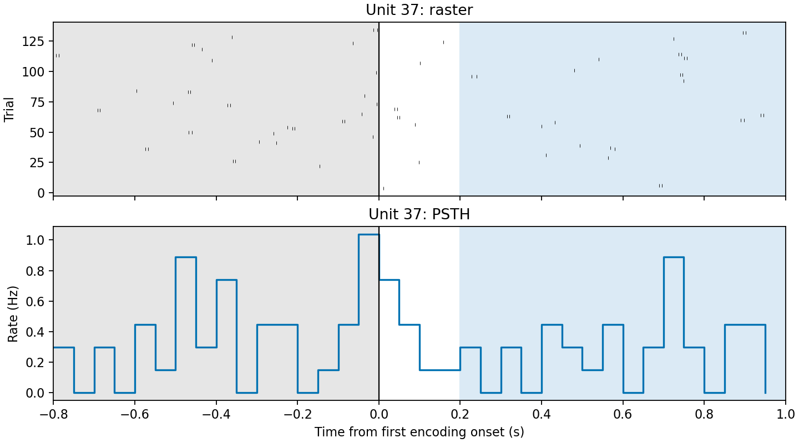
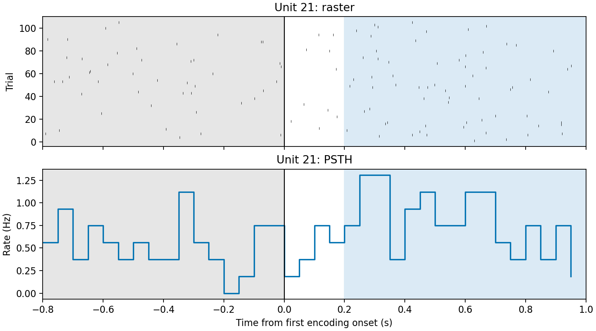
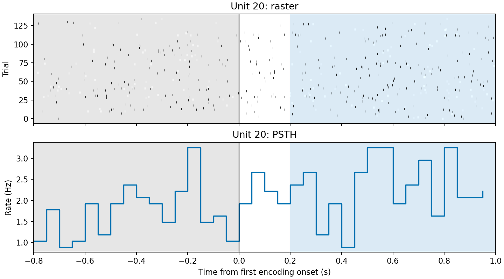

基于 DANDI 000469 Sternberg 工作记忆任务公开数据 · 21 个 session · 901 个 QC 神经元 · 可复现全链条分析
以初学者身份进入神经科学：理解 unit、spike time、iEEG、MTL、工作记忆与基线比较这些核心概念，并在真实数据上落地。
掌握 Python 的 pynwb / h5py 生态：读取 NWB 结构、提取 trials 与 units、做事件对齐与统计检验。
不止跑出一张图——建立 可复现、可审计、可冻结 的分析仓库：版本化结果、审计日志、固定随机种子、失败留痕。
项目定位：这是基于公开数据的二次分析，不重新采集数据、不重新 spike sorting， 重点是把「事件时间 → spike → 放电率 → 统计推断」这条链路做扎实。
主问题：在每个可兼容 session 内，第一张编码图片出现后，单元的放电率是否高于图片出现前的基线？ —— 结论只能以 session 为分析边界解释，绝不跨 session 拼接 trial 或 unit。
| 项目 | 固定定义 |
|---|---|
| 对齐事件 | timestamps_Encoding1 |
| 基线窗 / 反应窗 | [−0.8, 0.0) s [0.2, 1.0) s 放电率差，单位 Hz |
| 单元检验 | session 内 10,000 次单尾配对置换检验（备择：图片后更高） |
| 不确定性 | 5,000 次 bootstrap 置信区间 |
| 多重比较 | 仅同一 session 内 BH-FDR，阈值 q < 0.05 |
| 随机种子 | 20260901 |
| 绘图纪律 | 数值先行：主分析不导入 Matplotlib，确认后才在独立环境绘制少量代表图 |
src/ 无副作用、可被脚本与 notebook 复用；I/O 与批处理逻辑不混入统计实现。
任何 session 失败都写入 session_failures.csv 与 failure.json，绝不静默跳过。
数值在 bci 环境单进程运行；绘图在 bci-plot 环境单独进行，仅少量代表图。
20 个 ses-1 文件完整可读，但缺少 timestamps_FixationCross / Encoding1 / Encoding1_end。 在不改变事件定义的前提下无法套用主分析——因此在数值分析之前就排除， 并为每个文件留下机器可读的 failure.json 审计记录。
「在 21 个兼容 session 中，16 个 session 含有至少一个 session 内 FDR 显著的 unit，共 101 个 unit 在图片后放电率显著升高。」
「所有 session 在图片后均增强」——有的 session unit 平均差为负，5 个 session 没有任何显著 unit；也不能做跨受试者总体推断。
图片来自 screening 预选，显著 ≠ 「概念细胞」；总数 2,672 / 901 只描述数据规模，不构成合并检验。
单 session 基线对照（sub-20_ses-2）：135 个 trial、5 个 QC unit，FDR 校正后 0 个显著； 平均放电率差 0.065 Hz。这提醒我们：没有显著结果同样是诚实的结果，它是教学与回归测试的固定基线。



图只用于时间对齐 QC 与结果展示，不代替预先定义的统计检验；每个 session 仅绘制少量代表 unit，在独立的 bci-plot 环境中顺序生成。
python scripts/inventory_sessions.py
python scripts/run_primary_all.py
python scripts/summarize_primary_v2_all.py
conda bci 环境 · 单进程顺序执行 · 种子 20260901
时间窗、统计方案、结果文件与代表图已固定；历史版本 primary-v1、exploratory-v1 全部保留不覆盖。
每个 session 留存：metadata、参数、trial/unit QC、特征表、统计表、SHA-256 清单。
docs/experiment_log.md 记录每阶段输入、命令、环境、排除原因与验证结论。
docs/project_top_design.md 先于任何数据下载确定研究问题与统计方案。
新假设（ses-1、图片 ID、记忆负荷、脑区）必须开新版本目录，不得改写已冻结结果。
建立了对 unit / spike / 事件对齐 / 基线比较 / FDR 的直觉；理解为什么推断必须以 session 为界，为什么不能随手拼接数据。
走完 NWBFile → trials → units → electrodes 的完整读取链路；用 inventory 脚本把「字段存在性」变成分析前的硬检查。
实践了 src/scripts 分层、版本化结果、审计留痕、环境分离与冻结制度——这些习惯比任何单个 p 值都更值钱。
适配 ses-1 事件结构 图片身份 / 记忆负荷探索 行为正确率与反应时 脑区维度效应
数据：DANDI 000469（CC BY 4.0，版本 0.240123.1806）· Rutishauser Lab
代码与文档：github.com — Reanalysis_DANDI469_NWB